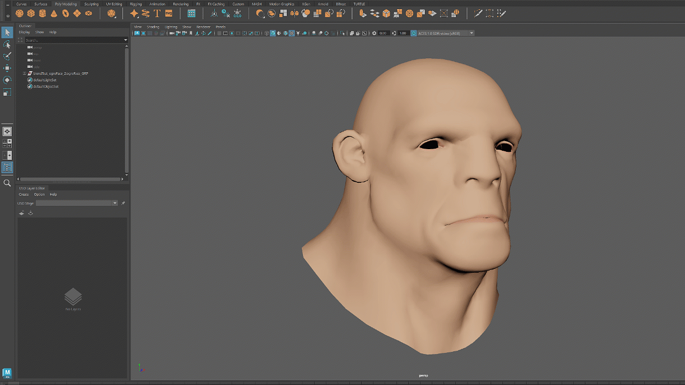

Support for blend shape import
With USD for Maya 0.29, you can now import USD blend shapes into Maya blend shapes, while preserving all the attributes.

Upgraded transform manipulator with edit routing support
We have upgraded our system to include edit routing support for the transform manipulator. With this enhancement, you can configure the edit router to automatically write all the transformations into a specified layer whenever the transform manipulator is utilized.
Ability to copy and paste a prim
You can now copy and paste a prim in the outliner. The pasted prim will be a sibling of the original prim by default and will be selected upon creation. You also have the option to paste it as a child to another prim.
Improvements on export
Display of material attributes in the Attribute Editor
We have enhanced the attribute editor to include the display of a prim's assigned or inherited material information. You can also open the material in the LookdevX graph editor by simply clicking on the LookdevX icon located next to the assigned material field.
| Build |
|---|
| [GitHub #3811] Performed code cleanup for the USD for Maya plug-in. |
| [GitHub #3689] Fixed Pixar plug-in for USD v24.03. |
| Translation Framework |
|---|
| [GitHub #3776] Added remapUVSetsTo option to UsdImport. |
| [GitHub #3759] Fixed an issue where the default prim list was ignoring the new root prim name if the export options were changed after naming a root prim. |
| [GitHub #3741] Added the option to exclude empty transforms when exporting to USD. |
| [GitHub #3729] Fixed an issue that was causing export failures for Maya scenes containing skinned meshes if these meshes were not in the same group or if a new root prim was assigned. |
| Workflow |
|---|
| [GitHub #3756] Fixed a rotation issue where an authored single-axis rotation was preventing the rotation around other axis. |
| [GitHub #3755] Fixed an issue where the centering pivot opration would fail if the pivot of a Maya geometry had been edited before being exported to USD. |
| [GitHub #3753] Introduced a new feature to accelerate Edit Routing when working with Python scripts. |
| [GitHub #3752] Fixed the issue where the transform manipulator was ignoring the pivot translation data from a USD file. |
| [GitHub #3695] Added support for Edit Router in the delete command. |
| [GitHub #3747] Extended the usage of the delete command edit routing. |
| [GitHub #3725] Fixed an issue where the undo operation on muted layers was not updated until the mouse hovered over the affected layer. |
| [GitHub #3722] Fixed the layer editor refreshing issue when reloading a stage from the Attribute Editor. |
| [GitHub #3721] Added the default value concept to the USD data model for UFE. |
| [GitHub #3719] Modified the UI to hide the default prim option that includes the mayausd node when caching a maya reference. |
| [GitHub #3714] Fixed a USD payload issue where the load/unload state is not being properly restored with Undo/Redo. |
| Render |
|---|
| [GitHub #3795] Fixed a shader compilation failure caused by the 'mxsmoothstepfloat' duplicate definition error. |
| [GitHub #3787] Fixed the UDIMs for custom textures. |
| [GitHub #3754] Removed the downcast of the world space hit point in HdxPickHit. |
| [GitHub #3744] Fixed the issue where selection highlighting was lost when toggling the instanceable state of a prim. |
| Miscellaneous |
|---|
| [GitHub #3812] Hid the Ramp node control point properties in the Attribute Editor. |
| [GitHub #3805] Inactivated materials if the Meshes checkbox is unchecked when option is set to duplicate to USD. |
| [GitHub #3794] Resolved an issue that blocks batch rendering when loading a scene saved with Maya USD plugin into a Maya session without the USD plugin. |
| [GitHub #3788] Added a tooltip for the LookdevX button in the material section in the Attribute Editor. |
| [GitHub #3771] Fixed an issue where an error message shows up in the script editor for correctly displayed MaterialX material in the viewport. |
| [GitHub #3724] Fixed the issue with exiting the function early if the required pxrUsd is not loaded. |